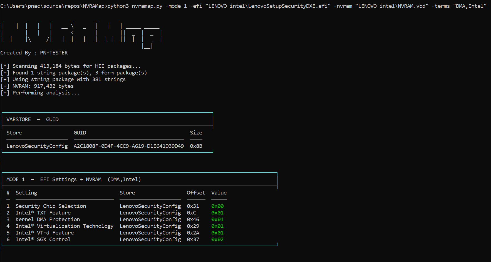

After the blog post, PN-Tester built a tool that automates the entire mapping process. Vendor-agnostic, works against most modern UEFI implementations. Pass it an EFI module and a firmware dump and it does everything we just did manually, in one shot.

-terms DMA,Intel →
Kernel DMA Protection, Intel VT-d, SGX all mapped to offsets + live values